방송통신산업기사 (2003-05-25 기출문제)
1과목: 디지털 전자회로
1. 다음 중 C-MOS 집적회로의 특징으로 옳지 않은 것은?
- 전력소모가 대단히 적다.
- 소형,경량이다.
- 반영구적이다.
- 동작속도가 TTL에 비하여 매우 빠르다.
(정답률: 알수없음)

2. 다음 10진수 → 2진수 → 1의 보수 → 2의 보수의 관계를 나타낸 것중 옳은 것은?
- 8 → 1000 → 1001 → 0110
- 7 → 0111 → 1000 → 0111
- 9 → 1001 → 0110 → 0111
- 8 → 1000 → 0111 → 1110
(정답률: 알수없음)
3. SSB(Single Side Band)에 관한 설명 중 맞는 것은?
- LSB와 USB로 구성된다.
- 전력 손실이 높다.
- 점유주파수 대폭이 반으로 줄어들고, 전력소모도 훨씬 적어진다.
- DSB에 비하여 진폭이 2배로 늘어난다.
(정답률: 알수없음)
4. 주파수변조에서 다음 변조지수중 대역폭이 가장 넓은 것은?
- 0.17
- 2.9
- 3.1
- 4.2
(정답률: 알수없음)
5. 논리식 A + AB를 간략화하면?
- A
- B
- 1
- AB
(정답률: 알수없음)
6. 그림 A파형의 정현파를 그림 B의 구형파로 바꾸려면 어느 회로를 사용하면 가능한가?
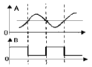
- 부우드 스트랩 회로
- 블로킹 발진기
- 슈미트 트리거 회로
- 다이오우드 pump회로
(정답률: 알수없음)
7. 트랜지스터 회로의 바이어스 안정도(S)가 가장 좋은 것은?
- S=1
- S=π
- S=50
- S=∞
(정답률: 알수없음)
8. PNP와 NPN트랜지스터를 조합하여 이루어진 Push-Pull 증폭회로를 무슨 회로라고 하는가?
- OTL
- OCL
- 위상반전회로
- 콤프리멘타리회로
(정답률: 알수없음)
9. 다음은 반 가산기(half adder)회로이다. X,Y에 각각 어떤 게이트 회로가 사용되어야 하는가? (순서대로 X, Y)
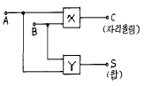
- AND, 배타적 OR
- 배타적, OR AND
- OR, 배타적 OR
- 배타적, OR OR
(정답률: 알수없음)
10. 트랜지스터의 스위칭 동작에서 turn-off 시간은?
- 지연시간(td)
- 지연시간(td)+상승시간(tr)
- 축적시간(ts)
- 축적시간(ts)+하강시간(tf)
(정답률: 알수없음)
11. 다음과 같은 회로에서 발진기로 동작하기 위해서는 Rf는 몇[kΩ]인가? (단, R1=6[kΩ], C=0.0⑤[μ F], R=15[kΩ]이다.)
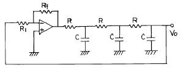
- 174
- 29
- 87
- 18
(정답률: 알수없음)
12. 4 개의 J-K 플립플롭을 이용하여 구성할 수 있는 분주기의 최대값은 얼마인가?
- 8분주기
- 10분주기
- 16분주기
- 24분주기
(정답률: 알수없음)
13. 제너 다이오드의 제너 전압 Vz=10[V]/0.5[W] 인 경우 최대 전류의 크기는?
- 0.5[A]
- 0.⑤[A]
- 0.5[㎃]
- 0.⑤[㎃]
(정답률: 알수없음)
14. 다음 회로의 출력 V0를 계산하면?
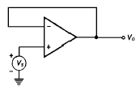
- V0 = Vs
- V0 = -Vs
- V0 = 0
- V0 = Vs/2
(정답률: 알수없음)
15. 다음 2진 부호는 어떤 종류의 부호인가?
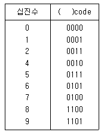
- Hamming code
- Gray code
- BCH code
- Excess 3 code
(정답률: 알수없음)
16. 그림의 적분기에 STEP 전압을 입력시켰을 때의 출력 파형은?
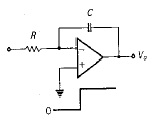
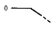
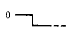
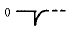
(정답률: 알수없음)
17. TTL NAND 게이트를 이용한 단안정 멀티바이브레이터 회로에서 C = 100[pF]이고 트리거 입력이 100[KHz]일 때의 입력파형과 출력파형이 그림과 같다면 저항 R 값은?
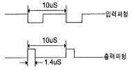
- 200[Ω ]
- 2[㏀]
- 20[㏀]
- 200[㏀]
(정답률: 알수없음)
18. 그림과 같은 상보대칭 푸시풀 회로에 관한 설명 중 관계 가 없는 것은?
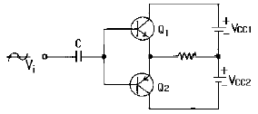
- 입력신호의 서로 다른 반주기동안 Q1과 Q2가 각각 동작한다.
- 출력신호에 크로스오버(CROSS OVER)일그러짐이 없다.
- 이미터 플로워 증폭기이므로 낮은 부하저항과 임피던스가 정합되어 효율적이다.
- 온도보상에 의해 안정도를 향상시키려면 이미터에 저항을 넣는다.
(정답률: 알수없음)
19. 다음은 CR 발진기를 설명한 것이다. 거리가 먼 것은?
- 낮은 주파수 범위에서 쓰이는 발진기이다.
- 이상형과 브리지형 발진기로 나뉜다.
- LC 발진기에 비해 주파수 범위가 좁으며 대체로 1[㎒] 이하이다.
- 대개 C급으로 동작시켜 효율을 높인다.
(정답률: 알수없음)
20. 다음 JK Flip-Flop의 입력신호 주파수가 1[㎒]일 때 출력신호의 주파수는?
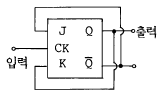
- 100[㎑]
- 500[㎑]
- 1[㎒]
- 4[㎒]
(정답률: 알수없음)
2과목: 방송통신 기기
21. 위성 DBS 중계기 안테나를 통해서 받는 전파는?
- 수평편파
- 수직편파
- 구형파
- 원편파
(정답률: 알수없음)
22. CATV전송선로에서 간선증폭기 종속단수가 많아지면 증폭기의 운용레벨 조정방법 중 맞는 것은?
- 입력레벨은 낮고 출력레벨은 높게한다
- 입력레벨도 낮고 출력레벨도 낮게한다
- 입력레벨은 높고 출력레벨은 낮게한다
- 입력레벨도 높고 출력레벨도 높게한다
(정답률: 알수없음)
23. 위성방송 수신용 안테나로 적당한 것은?
- 슬로트 안테나
- 휩 안테나
- 파라볼라 안테나
- 수퍼턴스타일 안테나
(정답률: 알수없음)
24. 무궁화 위성 시스템의 특징으로 틀린것은?
- 광역성 및 회선구성의 신속성이 있다.
- 여러 송신국에 같은 정보를 동시에 송수신할 수 있는 동보성이 있다.
- 여러 지점간 회선설정이 가능한 다원 접속성이 있다.
- 전송지연이 없고 고출력전송을 위한 소규모의 기지국으로 구성된다.
(정답률: 알수없음)
25. 방송신호 제작설비에 속하지 않는 것은?
- 스튜디오설비
- 조명설비
- 편집설비
- 송출설비
(정답률: 알수없음)
26. YAGI ANTENNA 는 어느때 사용되나?
- TV 신호 수신시
- 위성 신호 수신시
- 위성 신호 송신시
- 위성 중계시
(정답률: 알수없음)
27. 외국어 학습자와 청각장애인들을 위해 텔레비젼 화면에 자막을 내보내는 부가방송을 무엇이라 하는가?
- Teletext
- Teletex
- Closed Caption
- Intercasting
(정답률: 알수없음)
28. AM 송신기에 있어서 완충증폭기에 대한 설명으로 틀린 것은?
- 발진부 바로 다음 단에 설치를 한다.
- 주로 C급 증폭방식을 채택한다.
- 부하의 변동을 방지한다.
- 발진주파수의 변동을 방지한다.
(정답률: 알수없음)
29. CATV 의 Head End에 대한 설명으로 가장 타당한 것은?
- System에 흐르는 서비스 주파수 배열이나 채널 변환 없이 단지 중계 증폭기의 역할을 하는 것이다.
- 영상과 음성신호 중 영상 신호만을 처리하는 부분이다.
- 영상과 음성신호 중 음성신호만을 처리하는 부분이다.
- 각 채널의 출력 조정이나 채널 변환을 한다.
(정답률: 알수없음)
30. 다음중 주파수제어를 이용한 음향효과 기기는 무었인가?
- 콤프레서
- 익스펜더
- 이퀄라이져
- 노이즈게이트
(정답률: 알수없음)
31. 인물상 등을 다른 화상에 끼어넣는 화면 합성을 위한 것으로 특정한 색을 선택하여 키신호를 만드는 것은?
- 크로마 키
- 이펙트 키
- 출력 키
- 새도우 키
(정답률: 알수없음)
32. TV 송신기에서 영상과 음성 2개의 전파를 하나의 안테나로 방송하기 위한 결합장치는?
- LPF(Low Pass Filter)
- VSBF(Vestigial Side Band Filter)
- Diplexer
- Notch Filter
(정답률: 알수없음)
33. 방송회신 및 중계방송에 사용하는 마이크로파 통신방식의 특징을 기술한 것으로 바르지 못한 것은?
- 전리층을 통과하여 전파한다.
- S/N 개선도를 크게할 수 있다.
- 광대역성이 가능하다.
- 누화는 다른 방식보다 경감되지 않는다.
(정답률: 알수없음)
34. 프레임 주파수가 30[Hz]인 NTSC TV 방식에서 수평주파수는?
- 15,750 (Hz)
- 12,250 (Hz)
- 725 (Hz)
- 525 (Hz)
(정답률: 알수없음)
35. 방송수신기의 종합성능을 나타내는 주요 평가항목이 아닌 것은?
- 선택도
- 안정도
- 증폭도
- 충실도
(정답률: 알수없음)
36. 마이크의 지향성과 관계 없는 것은?
- 전지향성
- 단일지향성
- 수직지향성
- 양지향성
(정답률: 알수없음)
37. NTSC TV 방식에서 영상신호와 음성신호의 변조방식은?
- 영상신호 : FM, 음성신호 : AM
- 영상신호 : AM, 음성신호 : FM
- 영상신호 : PM, 음성신호 : FM
- 영상신호 : AM, 음성신호 : PM
(정답률: 알수없음)
38. 오실로스코프는 측정 대상의 전기신호를 파형으로 스크린에 표시하여 그 전기특성을 측정하고, 분석하는데 이용된다. 다음 중 오실로스코프의 용도로 맞지 않는 것은?
- 주파수 및 주기 측정
- 전압 측정
- 변조도 측정
- 잡음지수 측정
(정답률: 알수없음)
39. 오버슈트(Overshoot)란 입력파형에 대하여 출력파형이 규정값보다 넘어 화면 오른쪽 가장자리에 백색선이 발생하는 현상이다. 이의 원인은?
- 영상신호용 증폭기의 과도특성이 나쁠 경우
- 편향회로의 동기가 맞지 않은 경우
- 카메라 장치의 동기신호발생장치가 고장인 경우
- 색신호 재생회로의 과부하가 발생한 경우
(정답률: 알수없음)
40. 반송파 주파수가 102MHz,신호파 주파수가 5 kHz가 주파수편이 25kHz로 주파수 변조되었다. 변조지수는?
- 2.5
- 5
- 10
- 15
(정답률: 알수없음)
3과목: 방송미디어 개론
41. CATV 전송로 중 간선에만 사용되는 증폭기로서 전송로의 신호 손실을 보상하며 AGC 등의 기능을 가진 고품질의 증폭기는?
- DA(distribution amplifier)
- EA(extender amplifier)
- SP(splitter)
- TA(trunk amplifier)
(정답률: 알수없음)
42. TV 화면에 연속적인 흑백의 무늬가 수평 방향으로 모두 12개가 표시되였다. 이때의 수평주파수는 약 얼마인가?
- 0.11 MHz
- 0.22 MHz
- 0.33 MHz
- 0.44 MHz
(정답률: 알수없음)
43. 다음 멀티미디어의 하드웨어 구성요소 중에서 출력장치에 속하는 것은?
- 스캐너
- 오디오 입력시스템
- 모니터
- 터치스크린
(정답률: 알수없음)
44. 우리나라 공중파 방송의 변조 방식과 가장 관계가 먼 것은?
- AM
- FM
- AM - FM
- PM
(정답률: 알수없음)
45. TV 음성다중방식의 종류가 아닌 것은?
- AM-FM
- 2-carrier
- FM hybrid
- FM-FM
(정답률: 알수없음)
46. 현대 방송기술의 발전 방향에 대한 내용으로 틀린 것은?
- 종합적 매체에서 전문적 매체로
- 국지적 매체에서 국제화된 매체로
- 중심화된 매체에서 지역화된 매체로
- 쌍방향성에서 일방적 매체로
(정답률: 알수없음)
47. 시청자의 지시로 서비스를 발주, 이용할 수 있는 TV를 말하며, 이용자가 쌍방향 회선을 사용하여 개별 검색할수 있는 기능을 갖춘 다중형 TV 는?
- 인터랙티브 TV
- 웹 TV(Web TV)
- HDTV
- EDTV
(정답률: 알수없음)
48. CATV 방송의 특성과 거리가 먼 것은?
- 홈쇼핑도 가능하다.
- DBS 및 HDTV와 연결 사용할 수 있다.
- 많은 채널을 수용 할 수 있다.
- 일반 공중파 방송을 볼 수 없다.
(정답률: 알수없음)
49. 다음중 디지털 방송 시스템의 특징이 아닌 것은?
- 고기능화
- 다채널화
- 쌍방향화
- 초고속화
(정답률: 알수없음)
50. 유무선계가 혼합된 종합정보통신망 이라고 불리는 것은?
- HDTV
- VAN
- LAN
- ISDN
(정답률: 알수없음)
51. 다음 신호들은 방송 영상신호를 구성하는 대표적인 신호이다. 이 중 콤퍼지트(composite) 영상신호에 해당되지 않는 것은?
- R, G, B
- NTSC 복합신호
- Y, R-Y, B-Y
- Y, I, Q
(정답률: 알수없음)
52. 우리가 시청하고 있는 아날로그 텔레비전 방송에서 음성신호의 변조방식은?
- 주파수변조
- 진폭변조
- 위상변조
- 디지털변조
(정답률: 알수없음)
53. 공중파 TV방송에 가장 큰 잡음을 주는 것은?
- 태양 잡음
- 우주 잡음
- 공전
- 인공 잡음
(정답률: 알수없음)
54. 사운드 파일형식이 아닌 것은?
- WAV
- MID
- RA
- MPEG
(정답률: 알수없음)
55. 다음 중 디지털 방송의 특징이 아닌 것은?
- 디지털 신호는 압축이 필요하다.
- 수신전파가 일정값 이하가 되어도 수신가능하다.
- 전송대역폭 제한이 있어도 다수의 프로그램전송 가능
- 다양한 기능으로 방송시스템의 intelligent가 가능
(정답률: 알수없음)
56. 다음 중 문자미디어, 음향미디어, 영상미디어의 메시지 모두를 취급하지 못하는 것은?
- VTR
- 텔레비전
- 멀티미디어 PC
- 전화
(정답률: 알수없음)
57. 모니터용 스피커의 조건으로 잘못된 것은?
- 스테레오 대칭성 및 정위감
- 직선성 양호
- 넓은 재생대역
- 대출력 음압
(정답률: 알수없음)
58. 케이블 TV방송 네트워크 시스템에서 광케이블과 동축케이블을 인터페이스하는 장치는?
- TBC
- ONU
- TBA
- VOD
(정답률: 알수없음)
59. CD를 LP와 비교하였을 때, CD의 특징이 아닌 것은?
- 회전수가 일정하다.
- 방대한 기록용량을 가진다.
- 비접촉 재생방식이다.
- 내용물에 대한 색인 정보를 이용하여 랜덤액세스한다.
(정답률: 알수없음)
60. 방송국에서 SNG 지구국을 설계하고자 한다. 지구국에서 송신, 위성체에서 신호를 수신하는 UP-LINK 설계시 고려하여야 할 요소 (design factor)가 아닌 것은?
- 영상 및 음성 제작 기술기준
- Free space loss
- Satellite G/T
- Noise bandwidth
(정답률: 알수없음)
4과목: 전자계산기 일반 및 방송설비기준
61. 지상파 디지털 텔레비전 방송신호의 변조방식은?
- DSB
- SSB
- 4-VSB
- 8-VSB
(정답률: 알수없음)
62. 535[㎑]∼1606.5 [㎑]의 방송국의 주파수대 허용편차는?
- 10 [㎐]
- 15 [㎐]
- 20 [㎐]
- 25 [㎐]
(정답률: 알수없음)
63. 데이터의 처리에서 중앙처리장치와 입.출력장치와의 속도차에서 오는 비효율적인 요소를 최대로 줄인 장치는?
- 병렬연산장치
- 채널제어장치
- 인덱스 레지스터
- 부동소수점처리 프로세서
(정답률: 알수없음)
64. 정보통신부장관은 어떠한 경우에 공중선의 이득 지향특성에 관한 자료의 제출을 요구할 수 있는가?
- 방송사항이 변경되어 시설자가 허가신청을 한 경우
- 방송구역을 특정하는 방송업무를 목적으로 개설하려는 경우
- 방송국간 혼신간섭으로 주파수를 변경하려고 시설자가 허가 신청한 경우
- 동일성능의 송신기를 교체하려는 경우
(정답률: 알수없음)
65. 서브루틴의 호출에 이용되는 자료구조는?
- 큐(queue)
- 스택(stack)
- 배열(array)
- 리스트(list)
(정답률: 알수없음)
66. 10진수 738에 대한 BCD 코드(binary coded decimal)는?
- 0111 0011 1000
- 1110 0011 1000
- 1010 0111 0011
- 0010 1110 0010
(정답률: 알수없음)
67. 다음 중 무선국 검사에 있어서 시설자· 무선설비· 설치장소 및 무선종사자의 배치 등이 무선국 허가· 신고사항 등과 일치하는지 여부를 대조· 확인하는 검사의 종류는?
- 성능검사
- 확인검사
- 대조확인검사
- 대조검사
(정답률: 알수없음)
68. 통합방송법은 방송관계법을 통합하고 있는데 통합방송법에 포함되지 않는 방송관계법은?
- 방송법
- 종합유선방송법
- 한국교육방송공사법
- 유선방송관리법
(정답률: 알수없음)
69. 전자 계산기의 기본 논리 회로는 조합 논리 회로와 순서논리 회로로 구분 된다. 이중 조합 논리 회로에 해당 되는 것은?
- RAM
- 2진다운카운터
- 반 가산기
- 2진 업 카운터
(정답률: 알수없음)
70. 64비트 마이크로프로세서에서 데이터 버스(date bus)는 몇 개의 선으로 구성되어 있는가?
- 4개
- 8개
- 32개
- 64개
(정답률: 알수없음)
71. 다음 중 중계유선방송의 특징이 아닌 것은?
- 사용채널은 12채널 (54~216 MHz) 이다.
- 지상파,위성방송의 재전송 이다.
- 방송위원회의 허가가 필요하다.
- 방송국이 자체 전송망을 구축 운용한다.
(정답률: 알수없음)
72. 컴퓨터의 논리소자 발달과정을 가장 올바르게 표현한 것은 어느 것인가?
- 진공관-집적회로-트랜지스터-고밀도 집적회로
- 트랜지스터-진공관-고밀도 집적회로-집적회로
- 진공관-트랜지스터-집적회로-고밀도 집적회로
- 진공관- 초고밀도집적회로-고밀도집적회로-트랜지스터
(정답률: 알수없음)
73. 변조하기 전의 정보를 포함하고 있는 주파수대역을 무엇이라고 하는가?
- 기저대역
- 신호대역
- 변조대역
- 전송대역
(정답률: 알수없음)
74. 다음 중 방송국(초단파방송 또는 텔레비전방송을 행하는것을 제외한다)의 송신설비 공중선전력의 허용편차는?
- 상한 10%, 하한 20%
- 상한 5%, 하한 15%
- 상한 5%, 하한 10%
- 상한 5%, 하한 20%
(정답률: 알수없음)
75. 방송 위원회는 지상파방송 사업자로 부터 기금을 징수할수 있는 범위는?
- 광고매출액의 6/100
- 영업이익의 15/100
- 연매출액의 6/100
- 광고매출액의 15/100
(정답률: 알수없음)
76. 데이터의 표현 단위와 관계가 먼 것은?
- 바이트(byte)
- 레코드(record)
- 메모리(memory)
- 파일(file)
(정답률: 알수없음)
77. 종합유선방송사업은 누구의 허가를 받아야 하는가?
- 정보통신부장관
- 방송위원회위원장
- 문화관광부장관
- 종합유선방송협회장
(정답률: 알수없음)
78. 컴퓨터에서 명령 코드가 명령을 수행할 수 있게 필요한 기능을 제공하여 주는 역할을 하는 장치는?
- 누산기(Accumulator)
- 제어 장치(Control unit)
- 레지스터(Register)
- 번지 필드(Address field)
(정답률: 알수없음)
79. 컴퓨터가 프로그램을 수행하고 있는 동안 컴퓨터의 내부나 외부에서 응급상태가 발생하여 현재 수행중인 프로그램을 일시적으로 중지하고 응급사태를 처리하는 기법은?
- DMA
- Time sharing
- Subroutine
- Interrupt
(정답률: 알수없음)
80. 컴퓨터의 행위를 감시하고 통제하여 효율적으로 편리하게 이용할 수 있도록 도와주는 프로그램의 집단은?
- assembler
- compiler
- monitor
- operating system
(정답률: 알수없음)